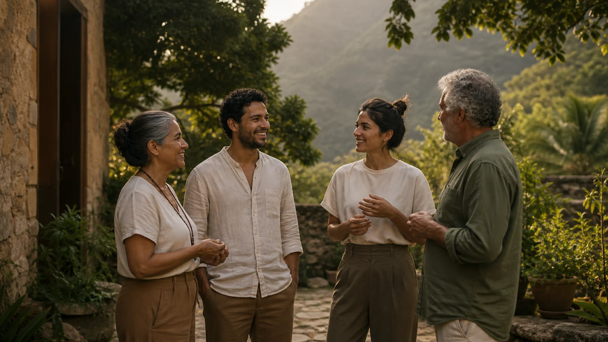

Quem somos
Um lugar onde muitos caminhos se encontram.
O Potala reúne cuidado, conhecimento, cultura e convivência para que cada pessoa possa descobrir, em seu próprio tempo, aquilo que faz sentido para sua jornada.
Conhecer nossa história
01
Uma visão de cuidado
Somos todos um único instituto.
O Potala nasceu da convicção de que o desenvolvimento humano acontece quando diferentes saberes podem dialogar. Cada pessoa chega com uma história, necessidades e possibilidades próprias.
Por isso, não oferecemos uma única resposta. Criamos um ambiente onde ciência, tradições de cuidado, educação, arte, cultura e espiritualidade possam se encontrar com respeito e consciência.
Origem e propósito
Estender as mãos para que novos caminhos possam surgir.
O Instituto Cultural Potala foi inaugurado em 26 de maio de 2012, em Indaiatuba. Seu nome remete ao Monte Potala, no Tibete, associado à morada de Avalokiteshvara — figura que simboliza a compaixão e a escuta dos clamores do mundo.
Essa imagem inspira uma missão simples e profunda: acolher pessoas e promover saúde física, mental e emocional por meio de experiências que respeitem a individualidade de cada ser humano.
Ecossistema Potala
Cuidar também é aprender, conviver, criar e transformar.
Atendimentos e práticas que acolhem o momento presente.
Cursos e conteúdos que ampliam a compreensão e a autonomia.
Corpo, arte e experiências que transformam conhecimento em vida.
Pessoas e iniciativas reunidas por um propósito comum.
Nossa essência